Lattice-Boltzmann-weights¶
“LBweights.py” is a Python script that calculates the weights of the (user-supplied) shells of a Lattice Boltzmann model on a simple cubic lattice, based upon numerically solving the Maxwell-Boltzmann constraint (MBC) equations. The script supports arbitrary spacial dimensions and arbitrary tensor ranks up to which the MBCs must hold. The script requires a Python installation (version 3.5 or 2.7) as well as NumPy. It assumes that the speed of sound is a free parameter and hence needs more shells than a model whose speed of sound takes on a definite value that is required for consistency. The output is typically given in the form: weights as a function of sound speed. There are cases where the supplied set of velocities does not admit any solution; in this case the script aborts. There are also cases where it admits infinitely many solutions; in this case an additional script “Continue.py” is used, which builds upon data that the main script stores on file.
In case of a unique solution, the script also calculates the interval(s) of sound speed for which all the weights are positive. At the borders of these intervals, at least one of the weights is zero, such that the corresponding shell may be discarded and one obtains a “reduced model”. In this way, the script is able to reproduce well-known models like D2Q9, D3Q19, D3Q15, etc., but can also easily find higher-order models with significantly more speeds.
For Continue.py, the user has to supply a well-defined value of the sound speed (or an interval plus step size for scanning several values). Moreover, it requires the specification of a shell (or of a set of shells) whose weight (or sum of weights) is to be minimized. Continue.py then finds an optimal solution to the thus-specified linear programming problem. Continue.py therefore requires the package cvxpy, see http://www.cvxpy.org/ .
A significant part of the code is not in the main scripts but rather in a collection of functions in “Functions.py”, which must be available to “LBweights.py” and “Continue.py”.
Tedious tasks like the construction of velocity shells from the velocity modulus are done by the script.
Apart from being useful for researchers and practitioners, the script may perhaps also be used in a classroom setting.
A detailed description of the underlying mathematical theory is given in the paper “Semi-automatic construction of Lattice Boltzmann models” by Dominic Spiller and Burkhard Duenweg. A link to that paper will be given as soon as it is published.
LBweights¶
Calculate LB model vectors and weights for a simple cubic lattice of arbitrary dimension
The method is described in D. Spiller’s and B. Duenweg’s paper “Semi-automatic construction of Lattice Boltzmann models” Therefore explanations in the code are not very detailed
- Exit codes:
- 0: System has unique solution
- 1: System has no solution
- 2: System is underdetermined and requires further examination
- 3: System has unique solution but there is no physically valid range of existence
- 127: General error
-
LBweights.Analysis(SpacialDimension, MaxTensorRank, ListOfTensorDimensions, GrandTotalList, Arguments)[source]¶ Performs the analysis for a given set of parameters
Parameters: - SpacialDimension (int) – Spacial dimension
- MaxTensorRank (int) – Maximum tensor rank

- ListOfTensorDimensions (list) – List of the dimensions of tensor space for tensors of rank 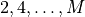.
- GrandTotalList (list) – List of lists. The -th sublist contains all velocity vectors of shell .
- Arguments (dict) – Dictionary of arguments as returned by function ParseArguments()
Returns: - Return codes:
- 0: System has unique solution
- 1: System has no solution
- 2: System is underdetermined and requires further examination
- 3: System has unique solution but there is no physically valid range of existence
- 127: General error
Return type: int
-
LBweights.GetInputData(Arguments=None, ListOfThrowawayStrings=None)[source]¶ Parse command line arguments. You can optionally give a list with the subshells that you want to discard.
Parameters: - Arguments (dict) – Dictionary of command line arguments. This is useful, if the function is used in an automated script that does not rely on user input.
- ListOfThrowawayStrings (list) – List of indices of the subshells to be discarded. This is useful, if the function is used in an automated script that does not rely on user input.
Returns: Tuple
(SpacialDimension, MaxTensorRank, ListOfTensorDimensions, GrandTotalList, Arguments)Return type: tuple
Continue¶
Contains routines to treat the case of infinitely many solutions.
- Exit codes:
- 0: No optimal solution found
- 1: Optimal solution found
- 127: General error
-
Continue.ParseArguments()[source]¶ Function to parse command line options.
Returns: Dictionary of command line options Return type: dict
-
Continue.Solve(V, ReducedRhs, NumberOfRows, ShellSizes, CsSquared, MinimizeWeights)[source]¶ Solve the minimization problem via convex optimization. See: https://www.cvxpy.org/
Parameters: - V (numpy.ndarray) – Orthogonal matrix that results from the singular value decomposition A=U.S.V
- ReducedRhs (numpy.ndarray) – Pruned matrix that has the inverse singular values on the diagonal.
- NumberOfRows (int) – Number of rows of A
- ShellSizes (list) – List of shell sizes (int) NOT including zero shell
- CsSquared (float) – Speed of sound squared
- MinimizeWeights (list) – List of indices of the weights that shall be minimized in the procedure
Returns: - cvxpy problem. Problem.status indicates
whether or not the problem could be solved.
Return type: cvxpy.problems.problem.Problem
Functions¶
Collection of Functions
-
Functions.LINEWIDTH¶ Line width for console output.
Type: int
-
Functions.QUIET¶ Flag to suppress standard output.
-
Functions.AbsSquared(Vector)[source]¶ Return the squared absolute value of numpy array. :param Vector: Vector that is supposed to be squared :type Vector: numpy.ndarray
Returns: Return the squared absolute value of Vector
-
Functions.AnalyzeTensorDimension(CurrentTensorRank)[source]¶ Recursive generation of lists that specify what types of tensors of rank CurrentTensorRank are compatible with cubic invariance and also fully symmetric under index exchange. For rank 2, these are just multiples of the 2nd rank unit tensor 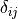. Thus tensor dimension is one. For rank 4, these are multiples of 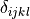 and multiples of 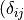, 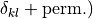. Thus tensor dimension is two. For rank 6, we get another tensor 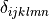, but also all possible products of the lower-rank deltas. Hence tensor dimension is three. For each new (even) rank M we get another delta with M indexes, plus all possible products of the lower-order delta tensors So, for rank two we get
[[2]](1d) for rank four[[4], [2,2]](2d) for rank six[[6], [4,2], [2,2,2]](3d) for rank eight[[8], [6,2], [4,4], [4,2,2], [2,2,2,2]](5d) and so on. The routine takes care of that “and so on”. This is most easily done in a recursive fashion.Parameters: CurrentTensorRank (int) – Tensor rank Returns: Dimension of tensor space list: List compatible tensors Return type: int
-
Functions.ComputeSubshell(Velocity, Group)[source]¶ Compute the (sub)shell that is being spanned by Velocity wrt. Group.
Parameters: - Velocity (numpy.ndarray) – Velocity vector
- Group (list) – List of transformation matrices that form the cubic group
Returns: - List of velocity vectors that form the velocity shell spanned by
Group
Return type: list
-
Functions.Contains(Array, List)[source]¶ Checks whether given numpy array is contained in list. The all() function is defined on numpy arrays and evaluates True if all elements are True.
Parameters: - Array (numpy.ndarray) – numpy array
- List (list) – List of numpy arrays
Returns: True if Array is contained in List, False otherwise.
Return type: bool
-
Functions.ContainsInSublist(Array, ListOfLists)[source]¶ Checks whether given numpy array is contained in a list of lists. The all() function is defined on numpy arrays and evaluates True if all elements are True.
Parameters: - Array (numpy.ndarray) – numpy array
- List (list) – List of Lists of numpy arrays
Returns: True if Array is contained in ListOfLists, False otherwise.
Return type: bool
-
Functions.DoubleFactorial(Number)[source]¶ - Implementation of the double factorial.
- 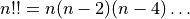
Parameters: Number (int) – Number Returns: Number Return type: int
-
Functions.Echo(String='\n', Linewidth=70)[source]¶ Formatted printing If QUIET is set (i.e. via command line option –quiet) this is suppressed.
Parameters: - String (str) – String to be printed to the console
- Linewidth (int) – Maximum line width of console output
Returns: None
-
Functions.EchoError(String='\n', Linewidth=70)[source]¶ Formatted printing Prints irregardless of value of QUIET
Parameters: - String (str) – String to be printed to the console
- Linewidth (int) – Maximum line width of console output
Returns: None
-
Functions.EnterWeights(TotalNumberOfShells, i_par=0)[source]¶ Gets vector of weights from user input
Parameters: - TotalNumberOfShells (int) – Number of shells INCLUDING zero-shell
- i_par (int) – Solution vector index (parametric solutions are written as )
Returns: Vector of weights
Return type: numpy.ndarray
-
Functions.EvaluateWeights(W0List, SolutionMatrix, CsSquared)[source]¶ Calculate numerical weights from their polynomial coefficients
Parameters: - W0List (list) – List of polynomial coefficients for zero shell
- SolutionMatrix (numpy.ndarray) – Solution matrix 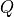
- CsSquared (float) – Speed of sound squared
Returns: List of numerical weights 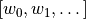
Return type: list
-
Functions.FillLeftHandSide(SpacialDimension, MaxTensorRank, ListOfTensorDimensions, TotalNumberOfShells, GrandTotalList)[source]¶ Construct the 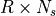 matrix

Parameters: - SpacialDimension (int) – Spacial dimension
- MaxTensorRank (int) – Highest tensor rank (M) to consider.
- ListOfTensorDimensions (list) – List of the dimensions of tensor space for tensors of rank .
- TotalNumberOfShells (int) – Total number of velocity shells

- GrandTotalList (list) – List of lists. The -th sublist contains all velocity vectors of shell .
Returns: Matrix
Return type: numpy.ndarray
-
Functions.FillRightHandSide(MaxTensorRank, ListOfTensorDimensions)[source]¶ Construct the matrix

Parameters: - MaxTensorRank (int) – Maximum tensor rank
- ListOfTensorDimensions (list) – List of the dimensions of tensor space for tensors of rank .
Returns: Matrix

Return type: numpy.ndarray
- MaxTensorRank (int) – Maximum tensor rank
-
Functions.FindRangeOfExistence(W0List, SolutionMatrix)[source]¶ Make use of the function “roots” that needs the coefficients in reverse order, in order to find the roots of the weight polynomials. If inbetween two roots all weights are positive, add them to list CompressedRoots
Parameters: - W0List (list) – List of polynomial coefficients for zero shell
- SolutionMatrix (numpy.ndarray) – Solution matrix
Returns: List CompressedRoots of roots that form valid intervals for the speed of sound.
Return type: list
-
Functions.FindVelocities(SpacialDimension, SquaredVelocity)[source]¶ Scans the cubic lattice for lattice velocity with squared length SquaredVelocity
Parameters: - SpacialDimension (int) – SpacialDimension
- SquaredVelocity (int) – Squared length of compatible lattice velocities
Returns: List of compatible lattice velocity vectors
Return type: list
-
Functions.Frexp10(Float)[source]¶ Returns exponent and mantissa in base 10
Parameters: Float (float) – Original number Returns: (Mantissa, Exponent)Return type: tuple
-
Functions.GetGroup(SpacialDimension)[source]¶ Compute the cubic group. Each transformation matrix in the group is made up of 2d unit vectors of type 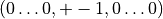. We will identify a vector with i-th component 1 and 0 elsewhere by the number
 . A vector with -th component -1 and 0 elsewhere
is identified by the number 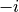.
The cubic group then consists of all orthogonal matrices, with columns
made up of the above unit vectors.
In general there are 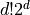 such transformations.
. A vector with -th component -1 and 0 elsewhere
is identified by the number 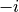.
The cubic group then consists of all orthogonal matrices, with columns
made up of the above unit vectors.
In general there are 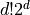 such transformations.Parameters: SpacialDimension (int) – Spacial dimension Returns: A list of all transformation matrices in the cubic group Return type: list
-
Functions.GetListOfSubshells(Shell, Group)[source]¶ Applies all group transformations to all velocities in shell and returns all distinct shells that result.
Parameters: - Shell (list) – List of velocity vectors
- Group (list) – List of transformation matrices that form the cubic group
Returns: List of distinct velocity shells
Return type: list
-
Functions.IndicatorFunction(W0List, SolutionMatrix, CsSquared)[source]¶ Tests, whether solution yields all positive weights.
Parameters: - W0List (list) – List of polynomial coefficients for zero shell
- SolutionMatrix (numpy.ndarray) – Solution matrix
- CsSquared (float) – Speed of sound squared
Returns: True if all weights positive, False otherwise
Return type: bool
-
Functions.LatticeSum(RandomVector, ListOfVelocities, TensorRank)[source]¶ Calculate the sum
for tensor rank
 and shell .
and shell .Parameters: - RandomVector (numpy.ndarray) – -th random unit vector
- ListOfVelocities (list) – List of velocity vectors in shell
- TensorRank (int) – Tensor rank
Returns: 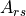
Return type: float
- RandomVector (numpy.ndarray) –
-
Functions.MakeRandomVector(SpacialDimension)[source]¶ Generate a random vector uniformly distributed on the unit sphere.
Parameters: SpacialDimension (int) – Spacial dimension d Returns: Vector of length one with random orientation in d-dimensional space. Return type: list
-
Functions.OutputRangeOfExistence(CompressedRoots)[source]¶ Screen output of the intervals of the speed of sound that yield all positive weights.
Parameters: CompressedRoots (list) – List of roots that form valid intervals for the speed of sound. Returns: Number of valid intervals Return type: int
-
Functions.ParseArguments()[source]¶ Function to parse command line options.
Returns: Dictionary of command line options Return type: dict
-
Functions.RatApprox(x)[source]¶ Calculates numerator and denominator for a floating point number x and returns the output as a string.
Parameters: x (float) – Number to approximate as fraction. Returns: Approximate fraction as string Return type: str
-
Functions.TestSolution(GrandTotalList, MaxTensorRank, SpacialDimension, ListOfTensorDimensions, Solution=None, atol=1e-08, rtol=1e-05)[source]¶ Test validity of the equation 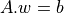 for given weights w and speed of sound 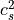. For this the numpy routine numpy.allclose() is used. A solution is deemed valid, if 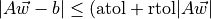).
The weights can be given as a linear parametric equation
Parameters: - GrandTotalList (list) – List of lists. The -th sublist contains all velocity vectors of shell .
- MaxTensorRank (int) – Maximum tensor rank
- SpacialDimension (int) – SpacialDimension
- ListOfTensorDimensions (list) – List of the dimensions of tensor space for tensors of rank .
- Solution (list) – Solution that is to be tested in the form
[CsSquared, [[w_00, w_01,...], [[w_10, w_11, ...], ...]If None is given, the user is prompted to enter a solution by hand. - atol (float) – Absolute tolerance (parameter for numpy.allclose())
- rtol (float) – Relative tolerance (parameter for numpy.allclose())
Returns: 0 if solution is valid, otherwise 1
Return type: int
-
Functions.ToMatrix(Array)[source]¶ Convert an array of unit vector representations to proper matrix. For example
[0,2,1]will be converted to[[1,0,0], [0,0,1], [0,1,0]].Parameters: Array (numpy.ndarray) – Array of integers Returns: Transformation matrix Return type: numpy.ndarray
-
Functions.Type(Shell)[source]¶ Method to determine typical velocity vector for Shell.
Parameters: Shell (list) – List of velocity vectors, e.g. [[0,1],[1,0]]Returns: Typical velocity vector, e.g. (0,1)Return type: tuple
-
Functions.WriteLatexNumber(Value, Outfile, Precision=8, Rational=False)[source]¶ Write Value to
Outfilein a Latex compatible wayParameters: - Value (float) – Value
- Outfile – Output file
- Precision (int) – Number of digits
- Rational (bool) – Approximate numbers by fractions
Returns: None
-
Functions.WriteLatexTables(CompressedRoots, W0List, SolutionMatrix, GrandTotalList, MaxTensorRank, Precision=8, Rational=False, Filename='latex_tables.tex')[source]¶ Write unique solution to a file in form of a latex table. This will append to any existing file.
Parameters: - CompressedRoots (list) – List of roots that form the valid intervals for the speed of sound
- W0List (list) – List of polynomial coefficients for zero shell
- SolutionMatrix (numpy.ndarray) – Solution matrix
- GrandTotalList (list) – List of lists. The -th sublist contains all velocity vectors of shell .
- MaxTensorRank (int) – Maximum tensor rank
- Precision (int) – Number of digits
- Rational (bool) – Approximate numbers by fractions
Returns: None
-
Functions.YesNo(Question)[source]¶ Ask for yes or no answer and return a Boolean. :param Question: String that is printed when function is called. :type Question: str
Returns: - True, if answer is any of [“YES”, “Y”, “yes”, “y”, “Yes”, CR]
- False, if answer is any of [“NO”, “N”, “no”, “n”, “No”]
Return type: bool